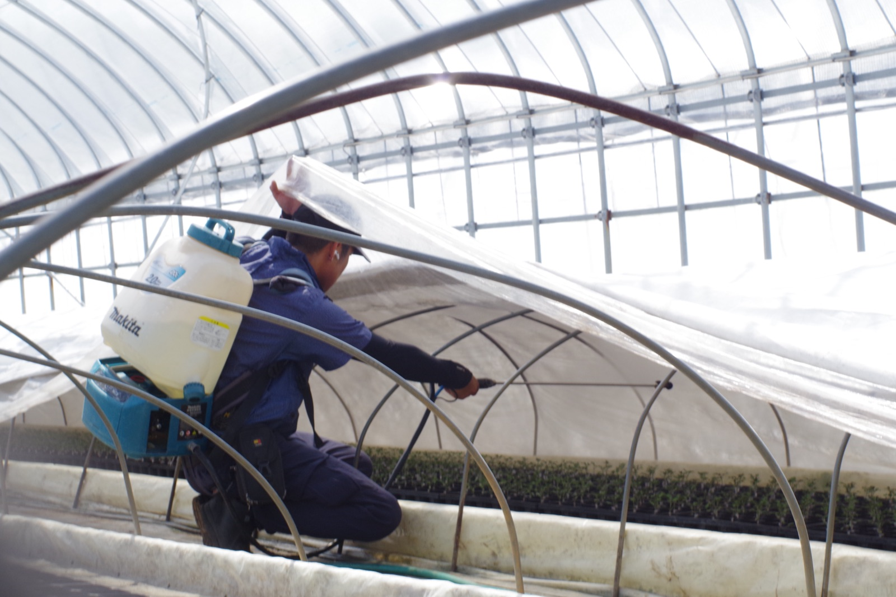

01
なぜ、いま
生産者の期待に、応えつづけたい
当別当育苗の接ぎ木苗は、県内外のプロの農家や企業に選ばれ、品質に高い評価をいただいています。業界最大手のメーカーが見学に来られることもあります。ご注文は年々増え、うれしいことに、お応えしきれないほどです。だからこそ、一緒に会社を育て、より多くの生産者の期待に応えていく仲間を探しています。
02
私たちの働き方
私たちが大事にする3つのこと
品質・効率・チームワーク。このどれか一つではなく、3つがかみ合って回ることが、良い苗づくりにつながると考えています。
01
品質を守る
いい苗をつくることが、すべての土台です。プロの農家に信頼される品質を、一つひとつの苗で守ります。
02
効率を高める
品質を守りながら、むだのない作業でつくる。多品目の苗を同時に、大量に育てるための工夫を続けています。
03
チームで支える
苗づくりはリレーです。一人の技術ではなく、チームの連携で、品質と効率を両立させます。
03
募集要項
募集の概要
未経験からプロの苗づくりを覚えていける仕事です。まずは職場見学だけでも受け付けています。
| 職種 | 育苗スタッフ（接ぎ木苗の生産） |
|---|---|
| 仕事内容 | プロ農家向けの接ぎ木苗づくりが主な仕事です。ハウスでの育苗と圃場の管理を担当します。育てる苗はスイカ・キュウリ・メロン・トマト・ナスなど多品目。パンジー・ビオラなどの花苗も手がけます。播種、育苗管理、潅水・施肥、出荷準備、配達などの作業があります。 季節によって作業内容や勤務時間が変わります。夏のハウスは暑く、繁忙期には早朝の配達もあります。 |
| 雇用形態 | 契約社員（有期6ヶ月・試用期間を兼ねる）からスタート。期間満了後の面談を経て、正社員（年俸制）へ登用します（自動転換ではありません）。 |
| 給与 | 契約社員期間は月給200,000円。 正社員登用後は年俸制です。 正社員モデル年収（想定・目安。等級・評価により決定） ・2年目以降：約320〜345万円 ・中堅・主任：約360〜430万円 ・管理職：約610万円 ※年俸＋賞与（年2回・目安2〜6ヶ月分）＋諸手当の合計。中堅・管理職は昇格後のモデルで、入社直後の条件ではありません。 |
| 就業時間 | 通常期 8:00〜17:30（休憩90分／実働8時間）。繁忙期は早朝配達で7:00〜、閑散期は半日勤務など、季節により変わります。 |
| 休日 | 年間休日105日。毎週決まった曜日の休みではなく、年間カレンダーに沿って取得します（閑散期にまとめて取得）。お盆・年末年始の休みがあります。 |
| 待遇・保険 | 賞与年2回。マイカー通勤可・交通費支給。雇用保険・労災保険に加入（健康保険・厚生年金は法人化後に加入予定）。年内に法人化（株式会社化）を予定しています。 |
| 応募資格 | 普通自動車運転免許（配達業務があるため。AT限定可）。そのほかの資格は不要で、未経験の方も歓迎します。限定解除・準中型免許の取得費用の補助制度もあります。 |
| 勤務地 | 鳥取県西伯郡大山町束積253-2（本社） |
| 応募方法 | お電話（0858-58-5005）またはメール（tbt.seedling@gmail.com）でご連絡ください。「採用ページを見た」とお伝えいただければ大丈夫です。職場見学もいつでも受け付けています。 |